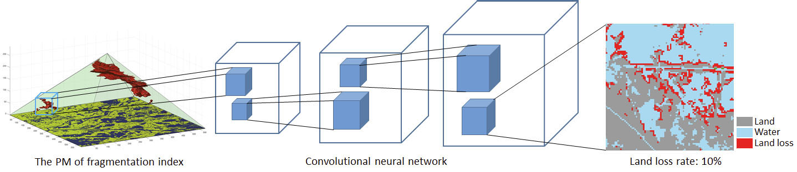

Analysis of Wetland Fragmentation
The second case study involves multiple projects that utilize the pyramid framework. One project focuses on wetlands fragmentation in coastal Louisiana. Fragmented wetland habitats accelerate erosion and habitat loss, driving animal and plant populations in fragmented small habitats to extinction. Human activities such as construction of oil and gas pipelines and transportation canals accelerate the fragmentation and erosion of coastal wetland and increase levels of storm surge from hurricane strikes. The case study will work from a baseline of fractal dimension computed for a binary landcover raster, stacking computations for a progression of focal windows and visualizing areas exceeding a specified threshold. Levels of fragmentation will be analyzed across scales using Moran's I metric.
